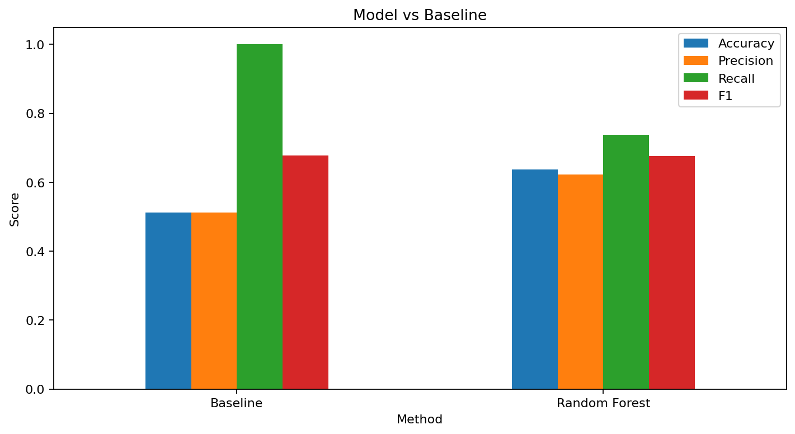

Content Opportunity Scoring
FlyRank ML Internship Capstone
Abstract
This study investigates which content pages show observed signals of search-performance decline and how those signals can support prioritization for human review. Using the pseudonymized FlyRank ML Internship content dataset, I constructed content-level performance features and defined a binary decline label based on a 20% reduction in impressions between two 30-day periods. A Random Forest classifier with 200 trees was evaluated against a majority-class baseline using a client-grouped train/test split. The final workflow produces a ranked review queue with reason codes to support practical content prioritization. These results are directional decision-support evidence and should not be interpreted as causal proof or as a prediction of Google's ranking algorithm.
1. Introduction / Problem Statement
Content teams may have many pages competing for limited optimization resources. A practical challenge is deciding which pages should receive attention first rather than reviewing every page equally.
This capstone addresses that prioritization problem using historical search-performance and content signals from the FlyRank ML Internship dataset. The objective is to identify pages showing stronger observed signals of decline or opportunity and convert those signals into a ranked review queue.
The decision supported by this analysis is which content pages should be reviewed first for possible optimization. The output is intended to support human investigation rather than automatically edit content.
2. Research Question
Which content pages show the strongest observed signals of search-performance decline or opportunity, and how can these signals support prioritization of pages for human review?
3. Data
This project uses the pseudonymized FlyRank ML Internship content dataset. The analysis uses a 30,000-row content-level sample containing 44 columns.
The available signals include historical impressions, clicks, sessions, search volume, CTR, average position, engagement rate, content age, freshness information, and trend information.
The analysis compares a previous 30-day impression period with a subsequent 30-day outcome period. Private client names, domains, raw private queries, credentials, and restricted exports are excluded from the public analysis.
4. Methodology
Target
A page is labelled as is_declining = 1 when impressions in the
outcome 30-day period are below 80% of impressions in the previous 30-day
period.
Features
- Previous 30-day impressions
- Search volume
- CTR
- Average position
- Engagement rate
- Days since last update
- Content age
Model
A Random Forest classifier with 200 trees was used.
Baseline
The baseline always predicts the majority class in the training data.
Validation
A client-grouped train/test split was used so observations from the same client were kept together during validation.
Leakage Control
The outcome-period impression value used to construct the decline label was not used as a model feature.
5. Results
The Random Forest was compared with the majority-class baseline using the same client-grouped test set. Accuracy, Precision, Recall, and F1 were used as evaluation metrics.
The measured values from the notebook should be used when interpreting the model performance. The result represents performance on this historical sample and should not be treated as a guarantee of future performance.

6. Limitations & Honest Framing
- The decline label is a proxy for search-performance decline and does not prove that a page needs optimization. ```
- The analysis is based on historical observations and search conditions can change.
- The model identifies statistical patterns but does not establish causality.
- The model does not predict Google's ranking algorithm.
- Recommendations are directional decision-support outputs and should be reviewed by a human. ```
7. Ranked Recommendations
The final workflow creates a ranked review queue. Pages with stronger observed decline signals receive higher priority for human investigation.
Priority 1 — Review and Refresh
Reason code: DECLINING_TRAFFIC
Pages showing substantial observed impression decline should receive human review first.
Priority 2 — Review Search Opportunity
Reason code: LOW_SEARCH_DEMAND
Pages with lower observed search demand can be investigated for their potential search opportunity and relevance.
Priority 3 — Review Click Performance
Reason code: LOW_CTR
Pages with lower observed CTR can be reviewed for possible title, description, or search-result presentation opportunities.
Monitor
Pages without a strong opportunity signal can remain in a monitoring group rather than receiving immediate optimization work.
8. Reproducibility
The analysis was developed using Python, pandas, NumPy, scikit-learn, and
matplotlib. The main workflow is contained in the capstone notebook under
work/notebooks/.
Generated charts and recommendation tables are stored under
work/outputs/.
The public repository contains the analysis workflow and public-safe artifacts without exposing private client information, credentials, or restricted raw data.
9. Acknowledgments & Data Credit
Built on the FlyRank ML Internship dataset.
Data and internship context provided by FlyRank.